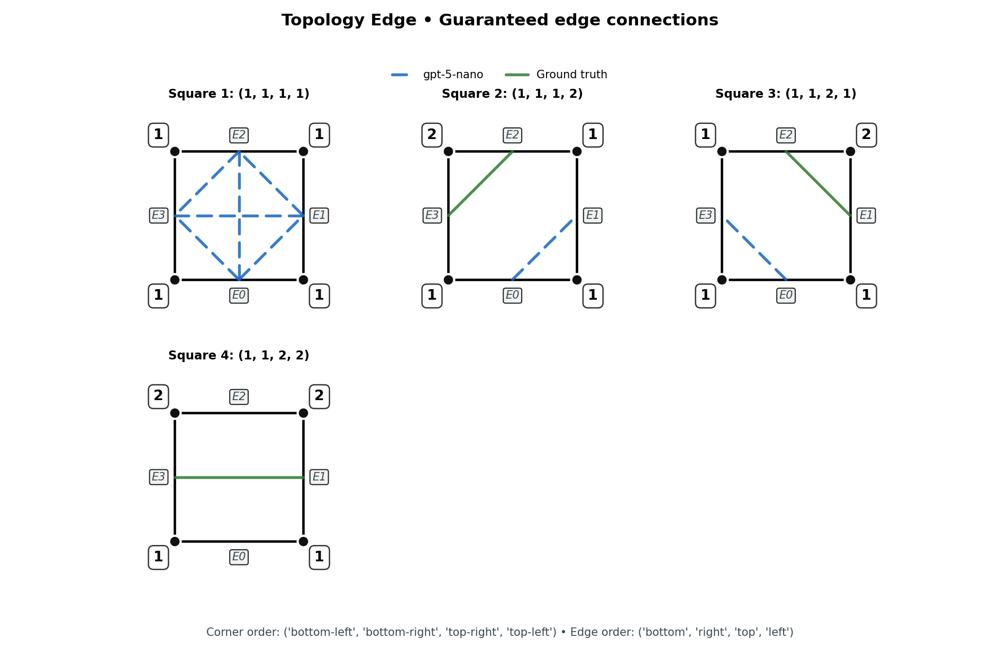
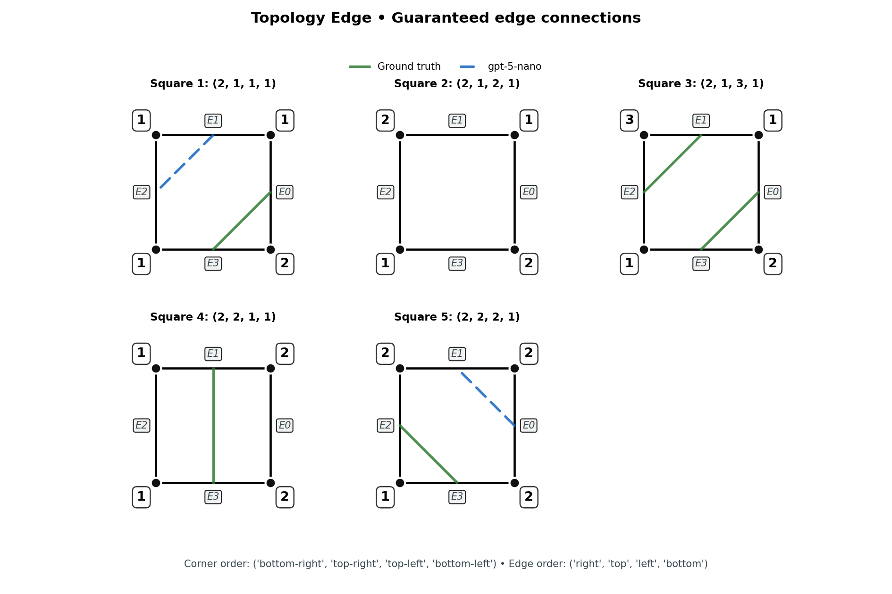
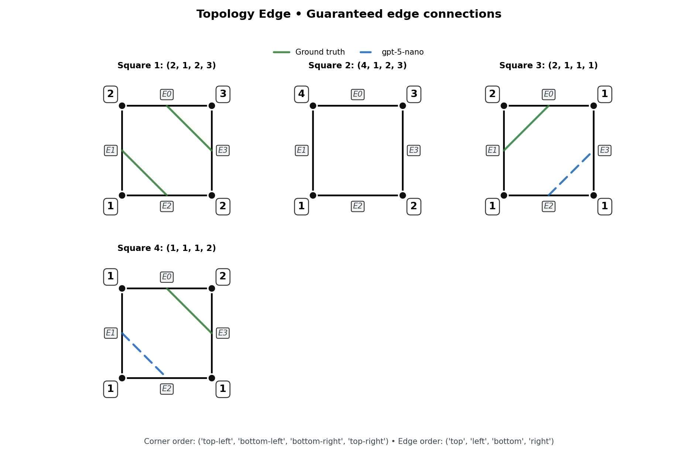
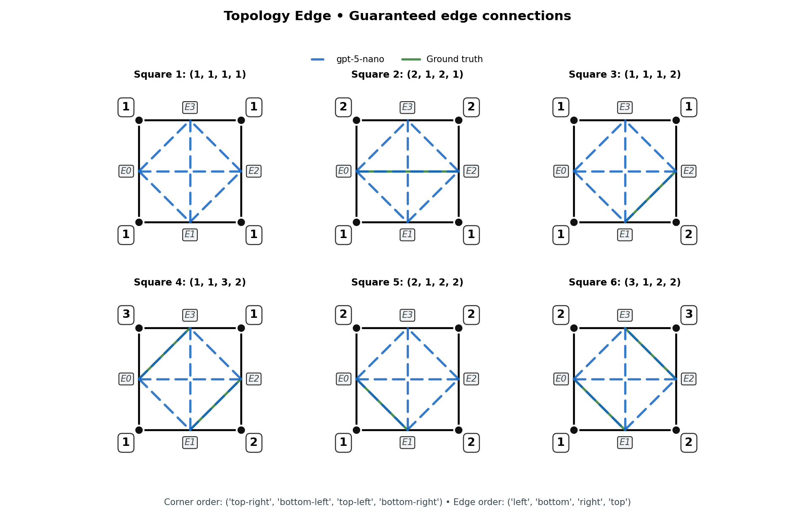
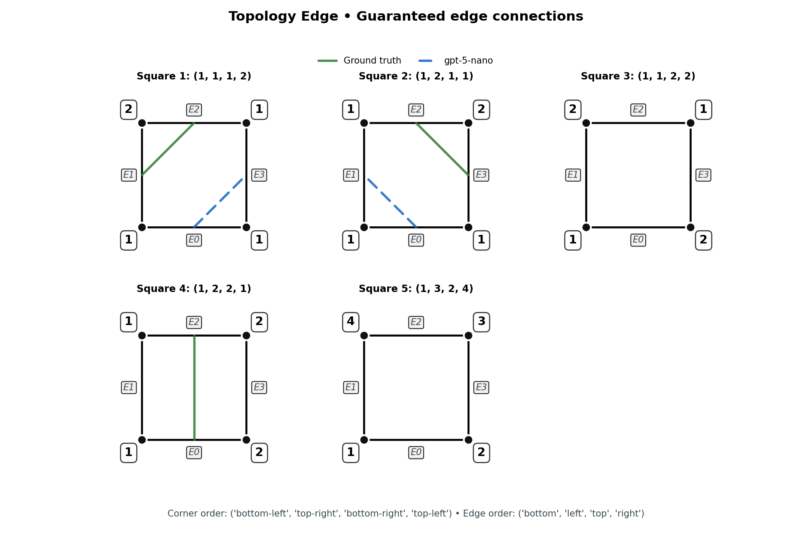
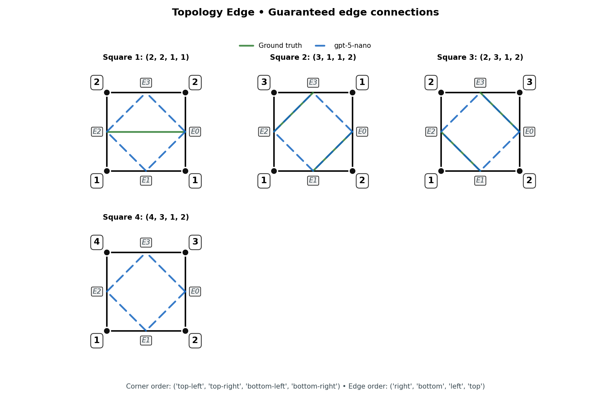
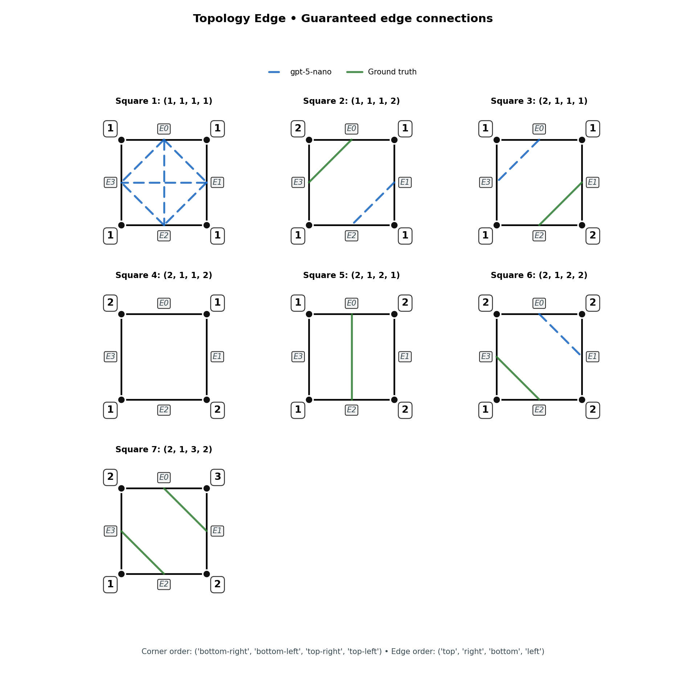
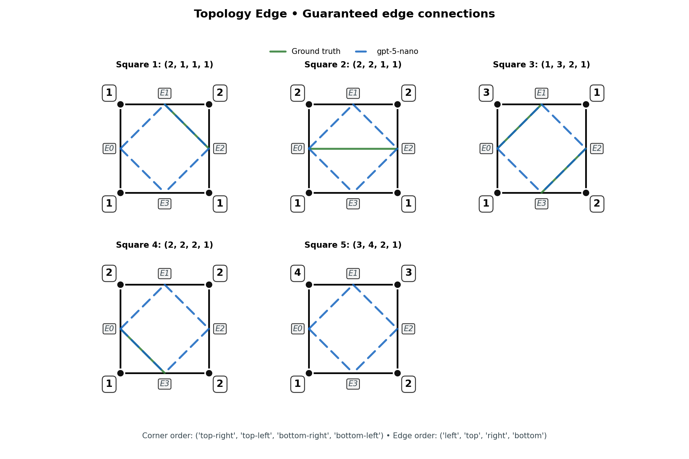

| Test 52: VGB2 — Topology Edge Tasks: Enumerate Edges | Score: 0.00 / 8 | ||
|---|---|---|---|
Typical Prompt: Squares (each tuple lists the four corner labels; integers denote distinct classes): (1, 1, 1, 1) (1, 1, 1, 2) (1, 1, 2, 1) (1, 1, 2, 2) You are given unit squares with corners labelled in ('bottom-left', 'bottom-right', 'top-right', 'top-left') order. Edges are indexed: bottom=0, right=1, top=2, left=3. For each square above (in the same order), list which edges are guaranteed to connect. Return a list where each element is a list of sorted [i,j] pairs (i < j). If no edges are deterministically guaranteed (including ambiguous cases), return [] for that square. |
Prompt Changes: Corner/edge ordering and curated edge cases vary per record; enumerate all edges guaranteed to exist. |
||
| Subpass 0 Parameters: subtask=enumerate_edges • corner_order=('bottom-left', 'bottom-right', 'top-right', 'top-left') • edge_order=('bottom', 'right', 'top', 'left') • cases=4 • tags=topology, edges, two-class View exact prompt View raw AI output View chain of thought Each panel shows a labeled unit square. Ground truth (green) marks guaranteed edge connections; model answers (blue) overlay predicted edges. Corner labels follow the prompt order; edge markers E0–E3 label boundaries. Curved arcs visualise connections without crossing the square. |
0.0000 passed: False missing: [0, 1, 2, 3] errors: [] |
 |
|
| Subpass 1 Parameters: subtask=enumerate_edges • corner_order=('bottom-right', 'top-right', 'top-left', 'bottom-left') • edge_order=('right', 'top', 'left', 'bottom') • cases=5 • tags=topology, ambiguous-included, edges View exact prompt View raw AI output View chain of thought |
0.0000 passed: False missing: [0, 2, 3, 4] errors: [] |
 |
|
| Subpass 2 Parameters: subtask=enumerate_edges • corner_order=('top-left', 'bottom-left', 'bottom-right', 'top-right') • edge_order=('top', 'left', 'bottom', 'right') • cases=4 • tags=topology, edge-permutation, edges View exact prompt View raw AI output View chain of thought |
0.0000 passed: False missing: [0, 2, 3] errors: [] |
 |
|
| Subpass 3 Parameters: subtask=enumerate_edges • corner_order=('top-right', 'bottom-left', 'top-left', 'bottom-right') • edge_order=('left', 'bottom', 'right', 'top') • cases=6 • tags=topology, edges, enumerate View exact prompt View raw AI output View chain of thought |
0.0000 passed: False missing: [0, 1, 2, 3, 4, 5] errors: [] |
 |
|
| Subpass 4 Parameters: subtask=enumerate_edges • corner_order=('bottom-left', 'top-right', 'bottom-right', 'top-left') • edge_order=('bottom', 'left', 'top', 'right') • cases=5 • tags=topology, edges, enumerate View exact prompt View raw AI output View chain of thought |
0.0000 passed: False missing: [0, 1, 3] errors: [] |
 |
|
| Subpass 5 Parameters: subtask=enumerate_edges • corner_order=('top-left', 'top-right', 'bottom-left', 'bottom-right') • edge_order=('right', 'bottom', 'left', 'top') • cases=4 • tags=topology, edges, enumerate View exact prompt View raw AI output View chain of thought |
0.0000 passed: False missing: [0, 1, 2, 3] errors: [] |
 |
|
| Subpass 6 Parameters: subtask=enumerate_edges • corner_order=('bottom-right', 'bottom-left', 'top-right', 'top-left') • edge_order=('top', 'right', 'bottom', 'left') • cases=7 • tags=topology, edges, enumerate View exact prompt View raw AI output View chain of thought |
0.0000 passed: False missing: [0, 1, 2, 4, 5, 6] errors: [] |
 |
|
| Subpass 7 Parameters: subtask=enumerate_edges • corner_order=('top-right', 'top-left', 'bottom-right', 'bottom-left') • edge_order=('left', 'top', 'right', 'bottom') • cases=5 • tags=topology, edges, enumerate View exact prompt View raw AI output View chain of thought |
0.0000 passed: False missing: [0, 1, 2, 3, 4] errors: [] |
 |
|
| Total Tests | Overall Score | Percentage |
|---|---|---|
| 57 | 0.00 / 8 | 0.0% |